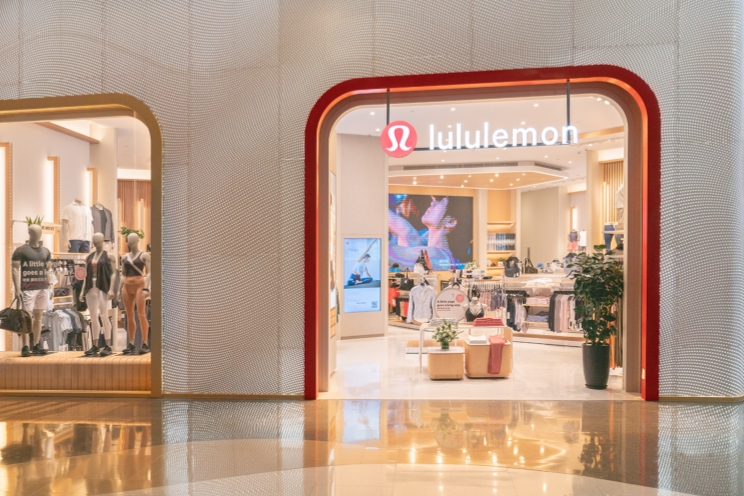
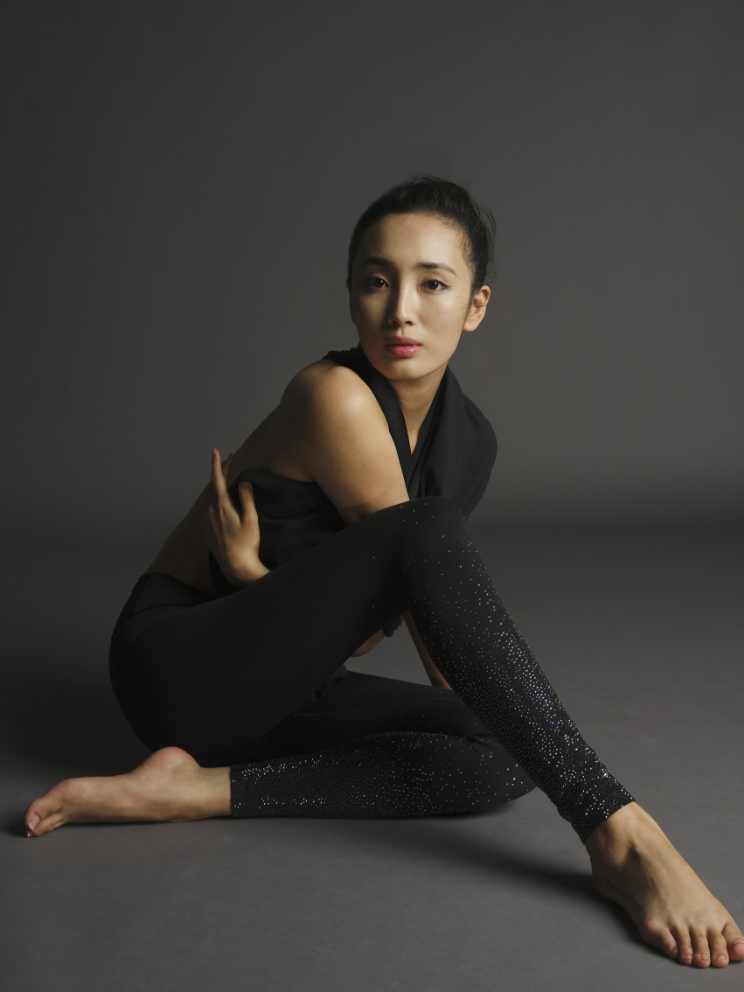
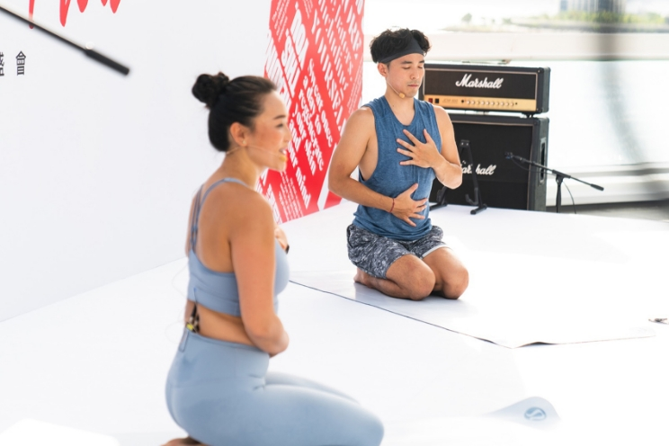
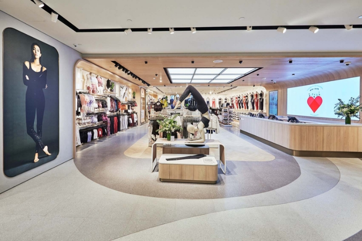
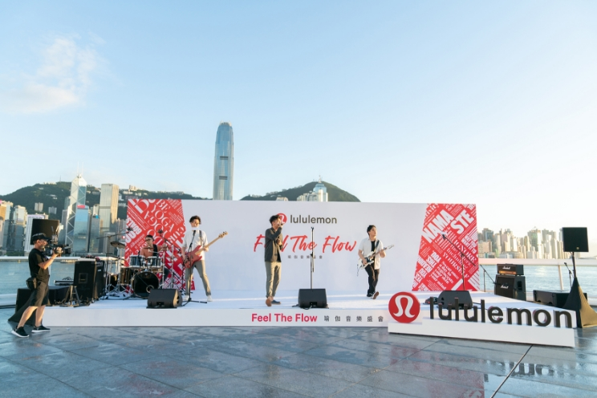
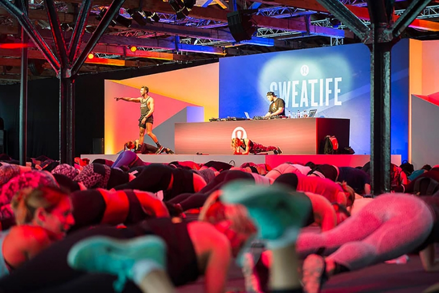

疫情下絕大多數的品牌價值都面臨倒退，首當其衝的，原來是衣食住行中的服裝業，戶外運動服裝品牌Under Armour受嚴重打擊，其次是多年來發展網上業務不順的快速時裝品牌H&M及UNIQLO，連百年老店零售商Marks & Spencer都不能倖免；不過在絕大多數商家受影響下，也有不少行業難得受惠的，主要是購物網站如Amazon及京東，標榜一條式龍購物的Walmart亦有所增長，不過有一個休閒服品牌竟然不跌反升，成為逆市奇葩，這就是加拿大年輕品牌Lululemon
 疫情下Lululemon仍然活躍，銅鑼灣希慎店在日前重新裝修開幕。(圖片來源：互聯網)2018年總資產價值超過20億美元的Lululemon，其實只是個成立了22年的新興品牌，不過成長神速：成立不足10年便進駐納斯達克及多倫多證劵交易所，近10年在海外不同地方擴張：2014年在倫敦開設旗艦店、5年前進軍中國，在在天貓開設旗艦店，今年的業績更為亮麗，因為她成為了疫情下品牌價值增長最快的公司，品牌價值在疫情期間增加了40%！
 與Swarovski 聯乘的瑜伽褲，售價$6,588！(圖片來源：互聯網)如果你問身邊的女朋友或女同事，或許你都知道Lululemon是冒起得最快的瑜伽服裝之一，近年來瑜伽大行其道，置身於瑜伽潮流，定位為瑜伽用品品牌的Lululemon自有其優勢，也很客易明白為甚麼Lululemon的顧客群中女性佔7成，除此以外，「高質量、高風格和高性能的產品」亦是Lululemon的用家評語，早前Lululemon推出了與Swarovski全球限量150條的Wunder Under水晶瑜伽褲，褲管鑲有水晶，盛惠港幣$6,588，盡顯「霸氣」。
 品牌大使與嘉賓林德信平起平坐，可見Lululemon對「Educators」的重視。(圖片來源：互聯網)不過，如果與用家只是一種「一買一賣」的關係，在現今世界已經不能再滿足消費者了；情況好比如果用不菲金錢只買來做瑜伽，還是太不划算了，作為瑜伽服潮流的開創者，Lululemon的運動休閒服，既可以日常鍛煉也可以出街穿著，這才讓用家厧意入手，不過更重要的是，Lululemon賣的不是衣服，而是生活態度及創立一個社交群體。
 尖沙咀海港城分店，乃全港最大的Lululemon分店。(圖片來源：互聯網)在全球絕大多數的Lululemon商店，不僅是售賣服裝的場所，商店也兼作瑜伽和健身工作室，其課程通常由「商店大使」主持；此外，瑜伽本身的「性格」，也定義了Lululemon的發展：Lululemon的群體與品牌理念一樣，都是「以生活方式為主導」，傳達出「瑜伽活動本
 舉辦列伽音樂直播，既迅速回應市場，又照顧到在家中瑜伽的朋友，難怪品牌價值逆市上升。(圖片來源：互聯網)Lululemon藉著店內的瑜伽課和健身室，無形中凝聚了本地和全球瑜伽社區的氛圍，令愛好瑜伽的人互相認識，這些活動能夠吸引到一群生活方式與其品牌相匹配的用家，而設立「商店大使兼任導師」這個制度，令Lululemon成為健身服裝的領導者。最後透過每年一度的「造勢大會」SweatLife Festival， 更將潛在客戶一網打盡。
 每年一度的SweatLife Festival，猶如瑜伽造勢大會。(圖片來源：互聯網)在疫情中，沒錯Lululemon或多或少在營業額上有所損失，不過因為「社區關係」做得好，上月在香港亦舉辦了「Feel The Flow Yoga & Music Show 瑜伽音樂盛會」等YouTube直播節目，照顧了在家的瑜伽愛好者，將社區移師到網上，所以身為運動服裝品牌，回應市場得快，亦是逆市上升之道。